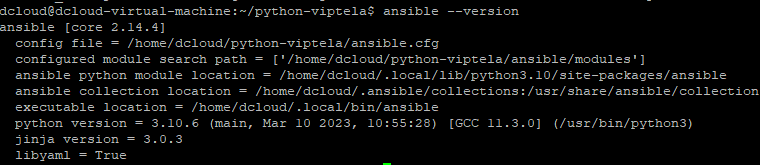
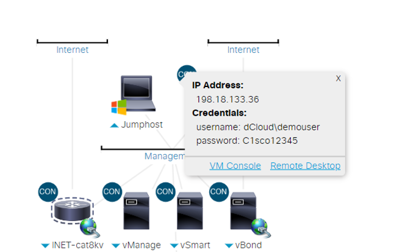
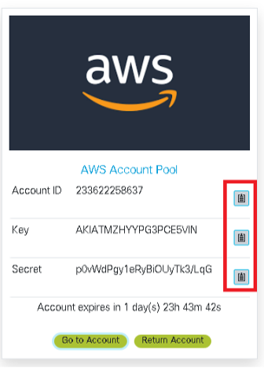

Environment Setup
Task 1: Environment Setup
1. Create a notepad that will have the following information that you’ll be working to fill out throughout this lab.
vManage IP: 198.18.133.10
vManage Username: admin
vManage Password: C1sco12345
AWS Access Key: {Captured at end of environment setup section}
AWS Secret Key: {Captured at end of environment setup section}
8000v UUID1: (To be used for Scenario 2)
8000v UUID2: (To be used for Scenario 2)
8000v UUID3: (To be used for Scenario 1)
VPC 1 ID: {Captured from Scenario 2}
VPC 2 ID: {Captured from Scenario 2}
2. Connect to the Ubuntu host via PuTTY. The IP address associated with the Ubuntu Linux host is 198.18.133.101.
3. Review the Cisco Viptela vManage Python SDK/CLI/Ansible repo in the /home/dcloud directory. Navigate to the /home/dcloud/python-viptela directory.
The syntax within Linux to change directory is ‘cd
To determine your current working directory type ‘pwd’ (print working directory). Change directory using ‘cd /home/dcloud/python-viptela’
pwd
cd /home/dcloud/python-viptela
Everything present is what is installed by default-minus the LTRXAR-2001 & roles directories. The LTRXAR-2001 directory includes all of the playbooks that are used-if something isn’t working, and you want to reference. The roles directory will be used for Scenario 1 (to be explained in more detail within that section).
Note: This has already been installed, but the process of installation was simple
cd /home/dcloud
pip install viptela **Already installed,Do Not Install again**
4. Verify Ansible is installed with ansible -–version  5. Modify the hosts file. The default location for this file is /etc/ansible/hosts .
1. Change directory to /etc/ansible: “cd /etc/ansible”
2. Modify the host file: “sudo nano hosts”
3. Copy/Paste the following:
[vmanage]
198.18.133.10
4. Exit & save the file using Ctrl+X > Y > Enter
5. Validate the contents of hosts file using: “more hosts”. Ensure that the host information for vmanage is configured with the IP address.
Note: This is as bare-bones as one could possibly create a host file. For the purpose of education, the host file format is most commonly in either INI or YAML. This host file allows Ansible playbooks to be executed hierarchically, with nested parent/child groups, and with specific variables associated to a host or group(s) of hosts.
[webservers]
foo.example.com
bar.example.com
[dbservers]
one.example.com
two.example.com
three.example.com
Note: The above is meant for EXAMPLE ONLY-the only content of your host file should be the vmanage group & IP associated with vManage (as seen in step 6).
6. Open your Windows jumphost via remote desktop 
7. Provision AWS credentials
(Double-click the Launch shortcut)
8. Request AWS account (this takes a couple of minutes, so let’s get this knocked out)
Note: As mentioned, this takes some time, proceed while you wait for the AWS account to be provisioned. Once this completes notate the account ID, API Key & API secret within the notepad that you’ve created to maintain lab variables.
The clipboard buttons to the right of each field are copy functions!
